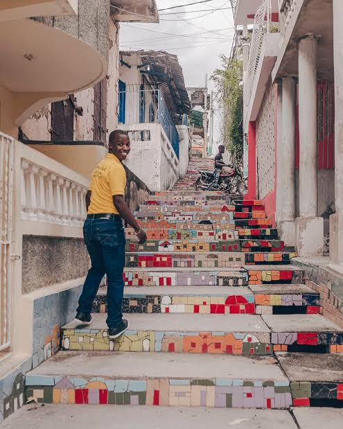
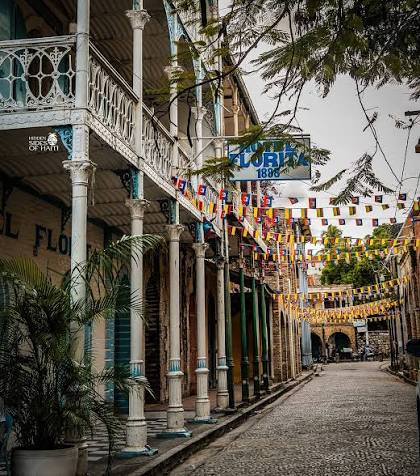

Histoire de Jacmel
Jacmel, fondée en 1698, est une ville portuaire située sur la côte sud d'Haïti. Elle est célèbre pour son architecture coloniale, ses festivals culturels et son artisanat unique, notamment le papier mâché. La ville a été un centre important pour le commerce du café et du cacao au XIXe siècle.



Culture et Art
Jacmel est réputée pour sa scène artistique dynamique. La ville accueille de nombreux artistes et artisans qui créent des œuvres d'art uniques. Le carnaval de Jacmel est l'un des événements culturels les plus célèbres d'Haïti, attirant des visiteurs du monde entier.


Plages et Nature
La région de Jacmel offre de magnifiques plages et paysages naturels. Les visiteurs peuvent profiter de la beauté de la mer des Caraïbes, explorer les montagnes environnantes et découvrir la biodiversité locale.



Le Cœur Historique
Flânez dans les ruelles pavées...
Les Trésors Naturels
Entre panoramas à couper le souffle...
La Révolution Culinaire
Poussez la porte de nos marchés...
>